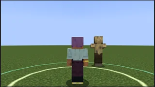
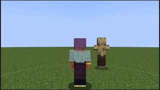

スキルとビルドSkills and builds
五つの木と旅人、36 の技、天職、刻印、要、型Five trees, the Wayfarer, 36 skillsレベルが上がると、力の振り分けと技の点が増えます。五つの木と旅人は、最初から全部の行が取れます。天職は木を開く鍵ではなく、あなたの専門です。Leveling grants stat points and skill points. Every tree and the Wayfarer is open from the start; a calling is your specialty, not a key.
技の画面（K）で、1 段 1 点。どの技も同じ値段です。三本の木を極めることはできません。何を選ぶかが、ビルドになります。Each rank costs one point in the skill screen (K), every skill alike. You cannot max three trees. What you pick is your build.
岩守りの木Rockwarden tree
筋力・耐久 ／ 壁・近接Strength / Vitality / tank, meleeLv 1 · 5 · 12 · 20この木の点Points in this tree
行 1 の 2 つ + 行 2 の 2 つ ・ 必要レベル 1 と 5Row 1 and row 2 · levels 1 and 5
 巨神斬りTitan Cleave岩属性Rock
使うActive
巨神斬りTitan Cleave岩属性Rock
使うActive
前方の扇を斬る。大きな相手に強い。Cone slash ahead; hits big foes harder.
属性: 岩Element: Rock


 返し刃Riposte岩属性Rock
常に効くPassive
返し刃Riposte岩属性Rock
常に効くPassive
 岩呼びRock Call岩属性Rock
使うActive
岩呼びRock Call岩属性Rock
使うActive
ほかの木Other trees
風読みWindreader
敏捷 ／ 機動・短い間合いの攻めAgility / mobility / close offense
潮歌いTidesinger
精神 ／ 支え・崩しSpirit / support / disruption
灰の鍛え人Ashsmith
筋力・精神 ／ 近接の攻め・火Strength / spirit / melee, fire
骨の射手Boneshooter
敏捷 ／ 遠い間合いの攻め・罠Agility / ranged offense / traps